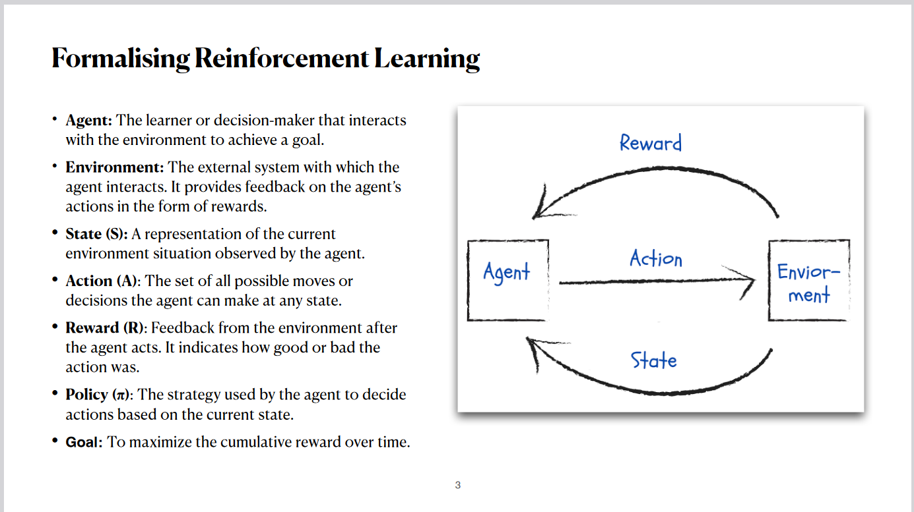
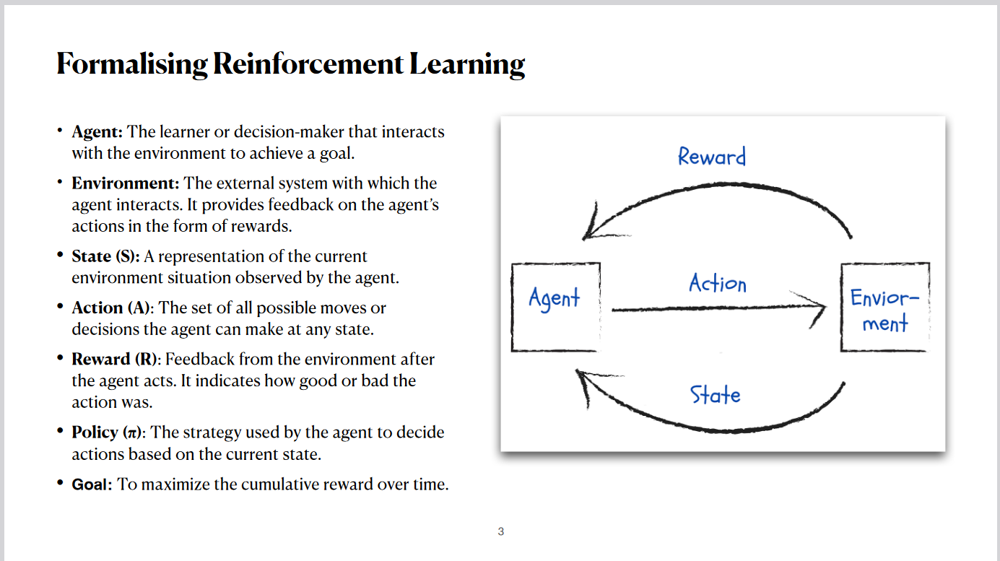
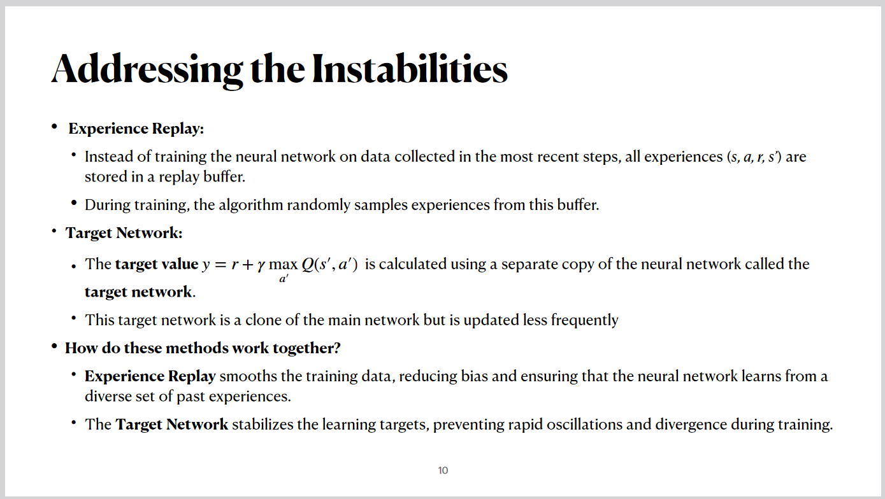
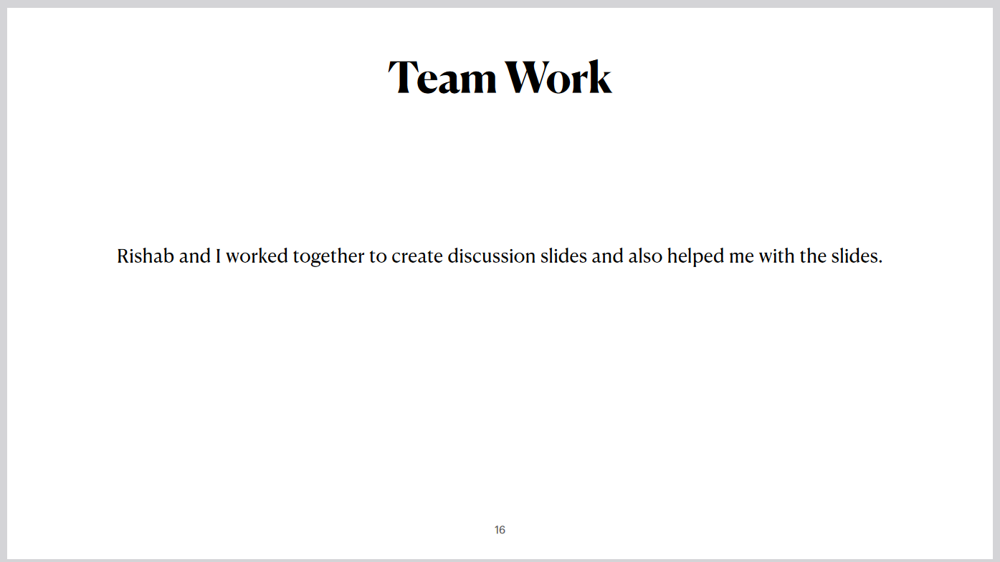

Human-level control through deep reinforcement learning
Authors: Volodymyr Mnih, Koray Kavukcuoglu, David Silver, Andrei A. Rusu, Joel Veness, Marc G. Bellemare, Alex
Graves, Martin Riedmiller, Andreas K. Fidjeland, Georg Ostrovski, Stig Petersen, Charles Beattie, Amir
Sadik, Ioannis Antonoglou, elen King, Dharshan Kumaran, Daan Wierstra, Shane Legg1 & Demis Hassabis
For class EE/CSC 7700 ML for CPS
Instructor: Dr. Xugui Zhou
Presentation by Group 7: Bharath
Kollanur (Presenter), Rishab Meka
Summarized by Group 6: Cheng Chen, Zhiyong Sui
Summary
The Deep Q-Network (DQN) combined reinforcement learning with deep neural networks,
achieving human-level performance across various complex tasks by learning directly from high-dimensional
sensory inputs like raw pixels. It utilized a deep convolutional neural network to process raw game pixels
through convolutional layers, outputting Q-values for possible actions without requiring hand-crafted features.
Stability in training was ensured through experience replay, which stored and randomly sampled experiences to
break data correlations and improve efficiency, and a separate target network to generate target Q-values,
reducing instability and oscillations.
The system was tested on 49 Atari 2600 games using the same architecture and hyperparameters.
It outperformed previous algorithms on 43 games, achieved human-level performance on 29, and demonstrated the
ability to learn long-term strategies. Key innovations included end-to-end reinforcement learning, learning from
raw pixels without feature engineering, stable deep neural network training with reinforcement learning, and a
general-purpose algorithm applicable across diverse tasks. The DQN represented a breakthrough in combining deep
learning and reinforcement learning, successfully integrating deep neural networks with Q-learning, mastering multiple
complex tasks with a single architecture, and laying the groundwork for modern advancements in deep reinforcement learning.
Slide Outlines
Motivation
 

Reinforcement learning is a type of machine learning where an agent learns to make decisions
by interacting with its environment and receiving feedback in the form of rewards or penalties.
Just like a child learns not to touch fire by experiencing the consequences, or a dog learns to
balance a ball for a treat, reinforcement learning focuses on learning from actions and outcomes.
Through trial and error, the agent refines its behavior to maximize rewards, ultimately developing
strategies to solve complex tasks.
Reinforcement learning can be broken down into key components: The agent is the decision-maker that interacts with the
environment. The environment provides feedback in response to the agent’s actions. The state represents the current
situation observed by the agent, and actions are the possible decisions the agent can take in any given state. Rewards
are the feedback signals indicating the quality of the action. The policy defines the agent's strategy for selecting
actions based on the current state, with the overall goal being to maximize cumulative rewards over time. This
interaction forms a feedback loop where actions influence the environment and, in turn, affect the agent's learning
process.
Background


In reinforcement learning, the agent's goal is to choose actions in each state that maximize the cumulative future
reward. This is represented mathematically as the sum of immediate and discounted future rewards, where the discount
factor determines the weight of future rewards compared to immediate ones. The action-value function, denoted as Q-star,
represents the maximum expected cumulative reward achievable from a given state and action when following the optimal
policy. The policy itself, denoted by pi, maps states to actions and defines the agent's strategy for decision-making.
In traditional reinforcement learning, experts manually design features based on their understanding of the problem.
However, this approach has significant limitations. Handcrafted features are often task-specific and struggle to
generalize to new problems or environments. Designing these features is also time-consuming and labor-intensive, making
the process inefficient. Moreover, handcrafted features may fail to capture the complexity of high-dimensional data,
such as raw pixels or unstructured data, limiting the agent's ability to effectively learn and perform in complex
scenarios.
Solution

The Deep Q-Network, or DQN, introduced in this paper provides a solution to the limitations of traditional reinforcement
learning. It eliminates the need for handcrafted features by directly processing raw sensory inputs, such as raw pixel
images. The DQN leverages deep convolutional neural networks to automatically learn hierarchical feature representations
that are relevant to the task, enabling more efficient and generalized learning from complex, high-dimensional data.
Traditional RL Working

In traditional reinforcement learning, the action-value function, Q of s and a, represents the expected cumulative
reward for starting in a given state, taking a specific action, and then following a specific policy. This Q-value is
calculated and stored as a table for every possible state-action pair.
The Q-learning algorithm updates these Q-values using the Bellman equation. However, this tabular representation faces a
major limitation known as state explosion. As the state-action space grows large, such as with continuous states or
high-dimensional inputs like images, maintaining and updating the table becomes computationally infeasible.
The Deep Q-Network, or DQN, addresses this scalability challenge by approximating Q-values using a neural network,
making it suitable for more complex and higher-dimensional problems.
Key Differences Between Normal RL and DQN

First, in normal reinforcement learning, Q-values are stored explicitly in a table for all state-action pairs, while DQNs use a neural network to approximate Q-values with weights, allowing for more efficient representation.
Second, scalability is a major distinction. Traditional RL methods are limited to small state-action spaces, whereas DQNs can scale to handle large and high-dimensional spaces, such as image-based inputs.
Third, normal RL relies on handcrafted features, requiring domain expertise to design them. DQNs, on the other hand, automatically learn features directly from raw sensory inputs, like pixels.
Finally, the learning process differs. Normal RL updates Q-values directly using the Bellman equation. In contrast, DQNs
minimize a loss function during neural network training to optimize their performance.
RL with Neural Networks is Unstable

In reinforcement learning, using neural networks can lead to instability for several reasons.
First, correlations in observations arise because the agent interacts with the environment step by step. For example, in
a video game, consecutive frames are highly similar, leading to strongly correlated data, which can hinder effective
training.
Second, action-value instability occurs because the policy, which decides actions based on Q-values, changes as the
neural network learns and updates Q-values. This constant change in the data distribution destabilizes the training
process, as the network must continuously adapt to shifting data.
Lastly, prediction instability stems from the Q-learning update process. The target value, calculated using the Bellman
equation, relies on the same neural network being updated. This feedback loop, where the network predicts and updates
its own targets, can cause instability during training.
Addressing the Instabilities


The main solution to the instability problem in reinforcement learning is to use two techniques: Experience Replay
and the Target Network.
Experience Replay ensures that the neural network is not trained on consecutive, correlated experiences. Instead,
all experiences—state, action, reward, and next state—are stored in a replay buffer. During training, experiences
are sampled randomly, which breaks the correlation and ensures diverse training data. This way, the network gets a
broader perspective on the environment, leading to more stable updates.
The Target Network addresses instability by introducing a separate, less frequently updated network for generating
target Q-values. Unlike the main network, which updates frequently, the target network is updated only after a fixed
number of steps. This separation means that the predicted Q-values and the target Q-values are calculated using
different networks, preventing the network from chasing a constantly moving target and stabilizing training.
Together, these techniques ensure smoother and more stable learning, effectively addressing the common instabilities
in reinforcement learning with neural networks.
The Deep Q-Network optimizes its learning process using a loss function, which measures the error between the
predicted Q-value and the target value. This loss is minimized using stochastic gradient descent to update the
network weights.
The target value, denoted as 'y,' is calculated as the immediate reward (r) plus the discounted maximum Q-value of
the next state, which is determined using the target network. The discount factor (gamma) balances the importance of
immediate versus future rewards.
By using two networks—the main network for predictions and the target network for computing stable target
values—this approach avoids the feedback loop issues. These networks are periodically synchronized, ensuring
stability and reliable updates. This process ensures that the network converges to more accurate Q-values while
maintaining robustness in learning.
Algorithm

The algorithm incorporates a balance between exploration and exploitation to ensure effective learning. During the
training process, a random action may be selected with a certain probability, which is part of the exploration
strategy. Exploration allows the agent to try actions that might not appear optimal at the moment but could lead to
better results in the long run. This approach ensures the agent doesn’t get stuck in local optima by always
exploiting known good actions.
At every step, the agent records the state, action, reward, and next state into the replay buffer. Random
minibatches from this buffer are then sampled to train the network. This randomness helps break correlations and
provides diverse experiences for better learning.
After a fixed number of steps, the weights of the main network are transferred to the target network. This periodic
update ensures the stability of the learning process, as the target network provides consistent Q-values for the
training of the main network. This loop of exploration, recording, learning, and weight transfer enables the agent
to continuously improve its policy.
Evaluation


This evaluation highlights the performance of the Deep Q-Network on 49 Atari 2600 games.
Key performance results include outperforming traditional reinforcement learning methods in 43 out of the 49 games
and achieving over 75% of human-level performance in 29 games. These results demonstrate the effectiveness of DQN
across a diverse set of challenges. Insights include the ability of DQN to generalize across games with the same architecture, hyperparameters, and
training
algorithm, showing minimal reliance on prior knowledge. The network exhibited human-like learning capabilities from
raw
sensory data, though it struggled with games requiring advanced long-term planning, such as Montezuma’s Revenge.
The normalized performance highlights how DQN consistently surpassed traditional models and reached or exceeded
human performance in several games. Notable successes include games like Atlantis, where DQN achieved nearly 450% of human performance, and Breakout,
where it scored over 1300% of the human benchmark. These results illustrate the robustness and adaptability of the
DQN approach.
The results show significant improvements in game scores when both techniques are used. For instance, in Breakout,
the score increased from just 10.2 without replay and target networks to 316.8 with both mechanisms. A further comparison of DQN with a linear function approximator shows that DQN achieves drastically better
performance, particularly in games like River Raid and Seaquest. This underscores the advantage of deep
learning-based representations in reinforcement learning.
Team Work

In this project, teamwork played a significant role. Rishab and I collaborated closely to create the discussion
slides, ensuring clarity and coherence. Rishab also provided valuable assistance in refining and enhancing the
presentation slides
Discussion Questions
Discussion 1: DQN performed well across 49 games with minimal prior knowledge. What features of
the architecture enable this generalization, and how might this approach extend to other realworld applications?
Group 9: DQN demonstrated strong performance across 49 games with minimal prior knowledge. How
does the architecture,
particularly features like experience replay and its focus on maximizing general rewards, contribute to this
generalization? Could this emphasis on generalization explain its challenges with long-term planning?
Additionally, how
might tuning factors, such as spatial features or other domain-specific characteristics, affect training and
generalizability? Could balancing these factors help adapt this approach to diverse applications beyond gaming?
The architecture of DQN, particularly experience replay and its focus on maximizing general
rewards, allows the model to generalize across tasks by providing diverse, uncorrelated data for training.
Experience replay ensures that the network is not just optimizing for immediate outcomes but learning patterns
that can be applied more broadly. However, this emphasis on generalization might contribute to challenges with
long-term planning, as the model may prioritize short-term gains that are more frequently reinforced in
training.
Tuning factors like spatial features or domain-specific characteristics could significantly impact performance
by aligning the training process more closely with the task's unique requirements. For instance, weighting
spatial features in games where positioning is critical could improve learning outcomes. Balancing these factors
through adaptive techniques could make DQN more robust and applicable to other real-world domains, such as
robotics or healthcare, where tasks are highly dynamic and rewards are sparse.
Group 6: How does experience replay specifically contribute to breaking correlations in data and
improving DQN’s performance?
Experience replay helps break correlations by storing the agent's experiences in a replay buffer
and sampling them randomly during training. This ensures that the data used for updating the neural network
comes from a diverse set of past experiences rather than consecutive, highly correlated states. By doing so, it
improves data efficiency and stabilizes the learning process, allowing the network to generalize better across
tasks.
Group 1: What role do hyperparameters, such as the discount factor (gamma) or learning rate,
play in enabling DQN to generalize across games?
Hyperparameters like the discount factor and learning rate are critical in balancing short-term
and long-term rewards. For instance, a high gamma focuses more on long-term rewards, while a lower gamma
prioritizes immediate gains. Tuning these hyperparameters helps DQN adapt to different game dynamics, ensuring
that it generalizes well across tasks with varying reward structures.
Group 3: How does the DQN architecture compare to other reinforcement learning algorithms, such
as policy gradient methods, in terms of generalization?
DQN uses value-based methods to estimate Q-values and select actions, while policy gradient
methods learn a direct mapping from states to actions. DQN's reliance on experience replay and a target network
enables better stability and generalization, particularly when dealing with large state-action spaces. However,
policy gradient methods may outperform in scenarios requiring stochastic policies or continuous action spaces.
Group 4: What are the key differences between DQN and traditional neural networks, particularly
in how they map inputs to outputs and learn optimal actions?
Traditional neural networks are trained for supervised tasks and directly map inputs to outputs
based on labeled data. DQN, on the other hand, maps states to Q-values representing the expected future rewards
for each action. This enables the agent to select optimal actions by learning through trial-and-error, making it
suitable for reinforcement learning tasks.
Discussion 2: The paper highlights challenges in games requiring long-term planning (e.g.,
Montezuma’s Revenge). What modifications or enhancements could make DQN more
effective in such scenarios?
Group 8: Thanks for pointing out how regularization plays a role in enhancing the generalization
and transfer capabilities of
DQN. It seems that by incorporating regularization techniques, the model not only learns to generalize across
different
tasks but also becomes more robust during the learning process. This could be crucial for ensuring stability and
adaptability when applying DQN to diverse real-world applications. How might specific types of regularization or
scheduling adjustments, such as those impacting the weighting of features, further optimize this transferability
and
improve overall performance in tasks requiring long-term planning?
Regularization techniques, such as dropout, L2 regularization, or batch normalization, help
prevent overfitting by ensuring the model doesn’t overly rely on specific features. These methods promote
generalization, which is critical in tasks requiring diverse capabilities. Scheduling adjustments, like
gradually decaying exploration rates or using adaptive learning rates, can help strike a balance between
exploration and exploitation.
For long-term planning, these techniques can provide stability and focus during training, especially in games
like Montezuma’s Revenge, where sparse rewards make the task more challenging. By carefully tuning these
adjustments, DQN can better prioritize intermediate goals and manage uncertainty in environments requiring
multi-step strategies.
Group 5: What specific strategies, such as hierarchical reinforcement learning or reward
shaping, could help DQN overcome the challenges of long-term planning?
Hierarchical reinforcement learning could break down complex tasks into smaller sub-goals,
allowing DQN to learn step-by-step strategies. Reward shaping could provide incremental feedback by rewarding
progress toward these sub-goals, which is especially useful in sparse-reward environments like Montezuma’s
Revenge. These methods guide the agent to explore efficiently and make progress toward long-term objectives,
ultimately making DQN more effective in scenarios that demand extended planning and multi-step decision-making.
{kind=link}
{kind=link}
{kind=link}